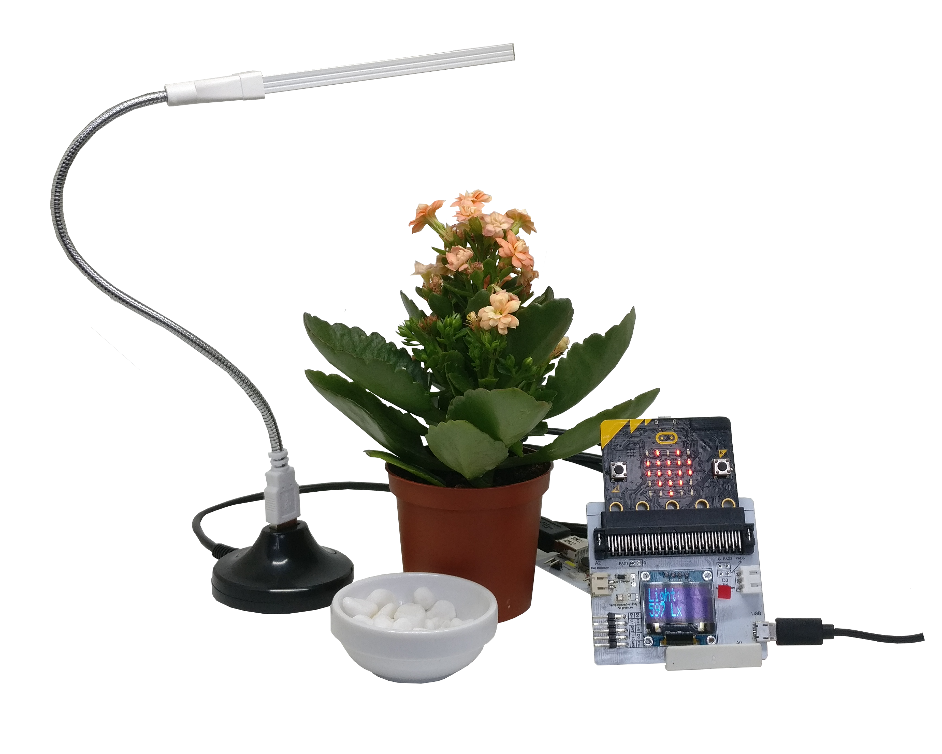

1. Product Introduction¶
1.1. About Smarthon Plant Kit for micro:bit¶
Plants are tremendously important to life on earth. They are the foundations of our ecosystem, producing life-giving oxygen, absorbing carbon dioxide and influencing climate as a carbon sink as well as providing food to us.
Smarthon Plant Kit is a scientific aid with Multiple Sensors and Actuators for students to learn and conduct experiment on plant studies. Simply using the graphical programming on BBC micro:bit makecode platform, it would be much easier for students to set up plant experiment. Not only can students learn about plant biology, they are also encouraged to ignite their creativity to design and study the particular projects on plant growth in deep.

1.2. Kit components¶
| No | Component |
|---|---|
| 1 | Multiple Sensors for plant |
| 2 | Multiple Actuators for plant |
| 3 | Connecting wire |
| 4 | Multiple sensors base |
| 5 | Temperature, Humidity and Air pressure sensor |
| 6 | Digital light sensor |
| 7 | Soil humidity sensor |
| 8 | LED grow light |
| 9 | USB stand (for LED grow light) |
| 10 | USB base (for LED grow light) |
| 11 | Water pump and pipe |
| 12 | Motor fan |
| 13 | Humidifier |
| 14 | USB Cable |